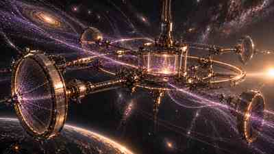

Push thresholds downward
Cryogenic calorimeters, superconducting sensors, low-gap semiconductors, phonon/charge readout and ultra-low-background targets can open recoil and absorption channels that are invisible to present instruments.
Author perspective · a 50-year scientific and engineering horizon
When I think about the next half-century of dark-matter research, I do not begin with an engine. I begin with a measurement. My question is: what sequence of instruments, physical discoveries and engineering capabilities would have to exist before today's invisible gravitational inference could become tomorrow's controllable technology?
Dark matter is already technologically useful in one sense: it forces us to build better detectors, better astronomical surveys, better simulations and better statistical methods. But the more ambitious question is whether the dark sector could ever become an engineered physical resource. I think that question is legitimate only if I keep a strict separation between what gravity tells us now and what an undiscovered microscopic interaction might permit later.
This is the maturity ladder I use throughout the page. At present, gravitational evidence is mature; a universally accepted microscopic identity and controllable coupling are not.
Cryogenic calorimeters, superconducting sensors, low-gap semiconductors, phonon/charge readout and ultra-low-background targets can open recoil and absorption channels that are invisible to present instruments.
Directional TPCs, anisotropic crystals and time-dependent detector networks could test whether a signal actually points back to the expected Galactic dark-matter wind.
Resonant cavities, quantum sensors, clocks, spin ensembles and interferometers can probe ultralight-field hypotheses where the dark sector behaves more like an oscillating background than individual impact events.
The first equation is only a flux scale; the second is deliberately schematic. A real rate requires a velocity distribution, an interaction operator, a target response, efficiencies, thresholds and backgrounds. This distinction is important to me because it is exactly where a plausible detector becomes an actual experiment.

Even without a laboratory particle detection, I expect the dark-matter problem to become increasingly map-like. Rubin, Euclid, Roman, precision spectroscopy, stellar-stream measurements, strong/weak lensing, CMB lensing and improved simulations can turn the halo from a static cartoon into a measured phase-space environment.
I can imagine future observatories producing something analogous to a weather map for the gravitational environment: subhaloes, streams, caustic-like features, cluster mergers and line-of-sight mass structures reconstructed with uncertainty attached to every feature.
Those equations describe gravity and lensing, not microscopic identity. But that is precisely why this path is valuable: it remains useful even if the eventual explanation is a particle, an ultralight field, self-interaction, multiple dark components, or a modification of the gravity–matter relation.

I would watch atom interferometers, optical clocks, quantum magnetometers, superconducting circuits, squeezed-light readout and distributed coherent sensor networks. Their value is not that “quantum” automatically means dark matter; it is that they can measure tiny phase, frequency, acceleration, spin or field changes while providing independent cross-checks.
I do not think of dark matter as a chemical fuel. Under present evidence there is no dark-matter molecule, bond chemistry or material that we know how to manufacture. Where chemistry and materials science matter is in the transducer: isotopically purified crystals, low-gap semiconductors, superconductors, polar materials, molecular targets, metamaterial resonators and phononic structures may convert a tiny exotic interaction into measurable charge, light, heat, spin or mechanical motion.
The path to discovery may look less glamorous than a spacecraft: cleaner surfaces, lower radioactive backgrounds, lower temperatures, better vibration isolation and more reliable detector calibration. In rare-event physics, an engineering improvement of one order of magnitude can create an entirely new scientific window.
I expect differentiable simulations, hierarchical Bayesian population models, simulation-based inference and uncertainty-aware machine learning to become central. I would not use AI as an oracle. I would use it as a compression and inference engine whose calibration, coverage and failure modes are explicitly tested against synthetic and held-out data.
A controllable weakly interacting messenger is attractive because it might penetrate environments opaque to radio, optical or microwave photons. That could matter for communication through planets, dense plasma, shielded structures or extreme astrophysical environments.
But weak interaction is a double-edged advantage. The same property that lets a signal pass through matter also makes it difficult to create, modulate and detect.
A credible system would need a full link budget: source power, generation efficiency, propagation loss, interaction probability, detector area, background rate, bandwidth, coding gain and latency. I would not call this technology plausible until a dark-sector excitation can be deliberately produced and detected on demand.
This is where I think scientific discipline matters most. Dark matter contains rest energy because all mass does. That does not mean the ambient halo is a usable fuel reservoir.
The final expression is an upper ceiling, not a power-plant design. The efficiencies hide the unsolved physics. A collector many kilometres wide is still almost transparent if the interaction probability is negligible. A practical system must also solve capture, storage or conversion, thermal management, radiation handling, structural mass and lifecycle reliability.
If the dark state were its own antiparticle, or if there were an exothermic conversion channel, the energy accounting would change—but those are model-specific hypotheses, not consequences of the astrophysical evidence.
Dark matter is tempting in propulsion discussions because it permeates galactic haloes. But “present everywhere” is not the same as “available reaction mass.” Any engine has to exchange directed momentum with something.
The second line is a deliberately generous momentum-flux ceiling. The parameter εp stands for the entire missing interaction and momentum-transfer physics. If εp is effectively zero, so is the thrust.
I therefore draw hard red lines around reactionless-drive claims, gravity shielding, faster-than-light travel and “free” energy. None follows from current dark-matter evidence. A legitimate propulsion programme would first demonstrate controlled directional momentum exchange in a laboratory and independently reproduce it.

This is the point where the horizon branches. If no non-gravitational coupling is discovered, dark-matter technology will remain primarily observational: mapping, precision cosmology, gravitational inference and better fundamental tests. That would still be a scientific revolution.
If, however, one interaction is discovered and can be deliberately modulated, then entirely new transducer technologies become imaginable. I would expect the first devices to be sensors and metrology systems, then perhaps communication or specialised imaging through otherwise opaque environments. Energy or propulsion would come much later because they demand orders of magnitude more interaction strength and control.
Precision maps of haloes, streams and substructure become infrastructure for astrophysics and cosmology.
Dark-sector sensing, timing, spectroscopy or through-matter metrology may become possible if production/detection can be commanded.
Only here do capture, storage, conversion or propulsion become meaningful engineering topics—and this branch is not supported by present evidence.
I would not place the majority of resources into speculative engines. I would fund the technologies that make decisive measurements possible regardless of which candidate survives.
These investments remain useful if the answer is a WIMP, an axion, an ultralight field, a hidden sector, primordial compact objects, multiple components or a failure of our assumed gravitational model.
I would update my technological expectations aggressively if a result crossed the following milestones:
I do not think the first great technological consequence of dark matter will be an engine. I think it will be a new class of instruments: instruments that make an invisible component measurable with the same confidence that spectroscopy made chemical composition measurable.
The real leap for civilisation would be the transition from inference to measurement, from measurement to control, and only then from control to engineering. If one new controllable physical property is discovered, decades of technology can grow from it. But no amount of imaginative rendering can substitute for that first reproducible effect.
That is the future I want this project to explore: ambitious enough to ask what dark-sector technology might mean, but disciplined enough to show exactly which piece of physics is missing at every step.